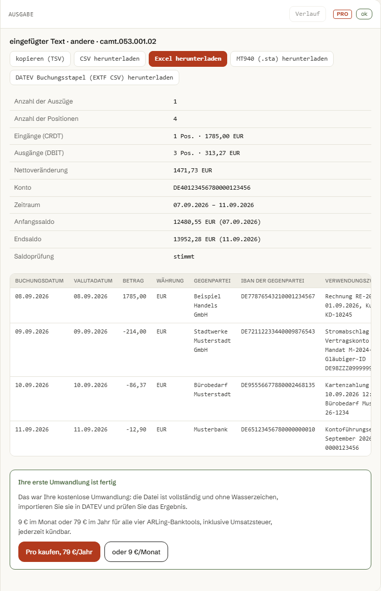

camt.053 in MT940umwandeln, für DATEV.
MT940 wurde im November 2025 aus dem Regelwerk der deutschen Kreditwirtschaft gestrichen, viele Banken liefern den Kontoauszug bereits nur noch als camt.053. DATEV Kanzlei-Rechnungswesen erwartet beim manuellen Dateiimport aber weiterhin MT940. Dieses Tool wandelt camt.053 im Browser in MT940 (.sta) oder direkt in eine DATEV-Buchungsstapel-Datei (EXTF) um, nichts wird hochgeladen.
- MT940 seit November 2025 nicht mehr im Bankenregelwerk
- DATEV-Dateiimport erwartet weiterhin MT940
- 0 € für camt.053 zu Excel/CSV, ohne Limit
- nichts wird hochgeladen

01
In drei Schritten von camt.053 zu MT940 oder DATEV.
Alles läuft im selben Werkzeug wie der kostenlose Excel-Export, nur die letzten Klicks sind neu.
-
camt.053 aus dem Online-Banking laden.
Sparkasse, Volksbank/Raiffeisenbank, Commerzbank, Deutsche Bank, Erste, Raiffeisen, UBS oder PostFinance: die Datei heißt meist „Kontoauszug XML" oder direkt „camt.053", im Auszugs- oder Postfach-Bereich des Online-Bankings.
-
Datei hochladen oder Text einfügen.
Das Tool liest die Datei im Browser, prüft Anfangs- und Endsaldo gegen die Summe der Buchungen und zeigt sofort eine Tabelle. Kostenlos, ohne Limit auf Excel oder CSV.
-
Bei den Downloads „MT940" oder „DATEV" klicken.
Die erste MT940- oder DATEV-Datei ist auch ohne Lizenz kostenlos und vollständig, damit Sie den DATEV-Import prüfen können. Jede weitere zeigt eine Vorschau der ersten Zeilen, mit Pro lädt die Datei direkt herunter.
02
Excel-Export bleibt kostenlos. MT940 und DATEV sind Pro.
Eine Lizenz für alle vier ARLing-Banktools: SEPA pain.001 Doctor, SEPA pain.001 Generator, camt.053 nach Excel und Zahlungsabgleich.
Kostenlos
- camt.053 zu CSV oder Excel, ohne Limit auf Dateien oder Downloads
- Saldenprüfung, VS/ŠS/KS beziehungsweise Verwendungszweck je Zeile
- kein Konto, keine Registrierung
Pro
- Export nach MT940 (.sta) für den manuellen DATEV-Import oder andere ältere Software
- Export direkt als DATEV-Format Buchungsstapel (EXTF CSV)
- mehrere Dateien gleichzeitig, Verlauf der letzten Umwandlungen
- ein Lizenzschlüssel für alle vier ARLing-Banktools: camt.053 nach Excel, SEPA pain.001 Doctor, SEPA-pain.001-Generator, Zahlungsabgleich
Preise inklusive Umsatzsteuer, Abrechnung über Stripe, monatlich kündbar, keine Mindestlaufzeit: den Kündigungslink schickt Stripe direkt in der Zahlungsbestätigung. Der Lizenzschlüssel funktioniert sofort in allen vier Tools derselben Domain.
ARLing s. r. o., Bratislava, Slowakei, USt-IdNr. SK2122352100. Die Umwandlung läuft in Ihrem Browser, Ihr Kontoauszug wird nicht hochgeladen. Importiert die Datei bei Ihnen nicht, schreiben Sie mit der Fehlermeldung an andrej@arling.sk, wir kümmern uns vorrangig darum. AGB · Datenschutz
03
Was in der MT940- und der DATEV-Datei steckt.
-
MT940 (.sta), SWIFT-Format.
:20:Referenz,:25:Konto,:28C:Blattnummer,:60F:/:62F:Anfangs- und Endsaldo,:61:je Buchungssatz mit Datum, Betrag und Soll/Haben-Kennzeichen,:86:mit Geschäftsvorfallcode und den strukturierten?00–?34-Unterfeldern nach der SEPA-Konvention (EREF+,SVWZ+). Zeilen auf 65 Zeichen und 6 Zeilen begrenzt, Umlaute in den SWIFT-X-Zeichensatz übertragen, CRLF-Zeilenenden, eine Nachricht je Auszug. -
DATEV-Format „Buchungsstapel" (EXTF CSV).
Kopfzeile mit Format-Kennung und Kategorie „Buchungsstapel", darunter die Spaltenkopfzeile und eine Zeile je Buchung. Soll/Haben folgt dem Feld
CdtDbtIndaus camt.053: Gutschrift auf das eingestellte Bankkonto wird Soll, Belastung wird Haben. Datumsformat TTMM, Dezimalkomma, Zeichensatz Windows-1252 mit erhaltenen Umlauten.
04
Ehrliche Grenzen.
Kein Marketingtext, sondern was vor dem produktiven Einsatz zu prüfen ist.
-
Die genaue Formulierung im Feld
:86:unterscheidet sich zwischen Banken.Es gibt keinen einzigen, für alle Institute identischen Geschäftsvorfallcode-Standard. Prüfen Sie das Ergebnis mit einer kleinen Testdatei, bevor Sie eine ganze Buchhaltungsperiode importieren.
-
Zwei Kopf-Metadatenfelder der DATEV-EXTF-Datei sind generisch, nicht kanzleispezifisch geprüft.
Beraternummer und Mandantennummer tragen Sie im Tool selbst ein, das Format der Kopfzeile folgt öffentlich dokumentierten, aber nicht für jede DATEV-Version einzeln bestätigten Regeln. Ein Testimport vor dem produktiven Einsatz ist empfehlenswert.
-
Kein Ersatz für den DATEV Bankdatenservice.
DATEV bietet für den direkten camt.053-Upload eine eigene, kostenpflichtige Lösung an. Dieses Tool ist für den manuellen Dateiimport gedacht und ist nicht mit DATEV verbunden.
-
MT940 wird selbst erzeugt, nicht von der Bank bezogen.
Liefert Ihre Bank nur noch camt.053, baut dieses Tool daraus eine MT940-Datei nach den offen dokumentierten SWIFT-Feldregeln, für Software, die ausschließlich MT940 einliest.
05
FAQ
Warum kann DATEV camt.053 nicht importieren?
Die deutsche Kreditwirtschaft hat MT940 im November 2025 aus ihrem Regelwerk für den Datenträgeraustausch gestrichen; viele Banken liefern den Kontoauszug seither bereits ausschließlich als camt.053 aus. DATEV Kanzlei-Rechnungswesen hat aber weiterhin keinen direkten Import für camt.053-Dateien, der manuelle Dateiimport erwartet dort nach wie vor MT940. Quellen: taxmain.de, ein Diskussionsfaden in der DATEV-Community zum Umstellungstermin 23. November 2025, und die DATEV-Seite zum neuen Format, alle abgerufen am 5. September 2026. DATEV bietet für den camt.053-Upload separat den kostenpflichtigen Bankdatenservice an, das ist ein anderer Weg als der manuelle Dateiimport.
Ist das sicher, meine Kontodaten hier hochzuladen?
Es wird nichts hochgeladen. Das Parsen der camt.053-Datei und der Aufbau von MT940 oder der DATEV-Buchungsstapel-Datei laufen vollständig im Browser, das Tool hat keinen Server, der Kontodaten verarbeitet. Im Netzwerk-Reiter der Entwicklertools ist kein Request mit dem Dateiinhalt zu sehen. Die einzige Netzwerkaktivität ist das Laden der statischen Seite und ein anonymer Nutzungszähler ohne Kontodaten.
Was kostet die Umwandlung nach MT940 oder DATEV Buchungsstapel?
Die Umwandlung von camt.053 nach CSV oder Excel ist kostenlos und ohne Limit. MT940- und DATEV-Buchungsstapel-Export sind Pro-Funktionen: 9 Euro im Monat oder 79 Euro im Jahr, Preise inklusive Umsatzsteuer, Abrechnung über Stripe, ein Lizenzschlüssel gültig für alle vier ARLing-Banktools (SEPA pain.001 Doctor, SEPA pain.001 Generator, camt.053 nach Excel, Zahlungsabgleich).
Was, wenn meine Bank MT940 noch direkt anbietet?
Dann brauchen Sie diesen Umweg nicht und können die MT940-Datei direkt aus dem Online-Banking herunterladen. Die deutsche Kreditwirtschaft hat MT940 branchenweit im November 2025 aus dem Regelwerk gestrichen, wie schnell einzelne Banken das im Online-Banking selbst nachvollziehen, kann in der Übergangszeit unterschiedlich sein. Dieses Tool ist für den Fall gedacht, dass im Postfach nur noch camt.053 liegt.
Funktioniert das mit Sparkasse, Volksbank, Commerzbank, Deutsche Bank, UBS oder PostFinance?
Ja. camt.053 ist ein bankunabhängiges ISO-20022-Format, das Tool unterstützt die beiden gebräuchlichen Versionen camt.053.001.02 und camt.053.001.08 und erkennt die Version automatisch. Es funktioniert mit jeder Bank in Deutschland, Österreich und der Schweiz, die camt.053 als Kontoauszug ausstellt, unabhängig vom Namen der Bank.
Quellen zum Wegfall von MT940 und zum DATEV-Import: taxmain.de/camt-053-in-mt940-umwandeln, DATEV-Community-Thread, datev.de, abgerufen am 5. September 2026.
camt.053 hochladen, kostenlos als Excel oder CSV, mit Pro-Lizenz direkt als MT940 oder DATEV Buchungsstapel.